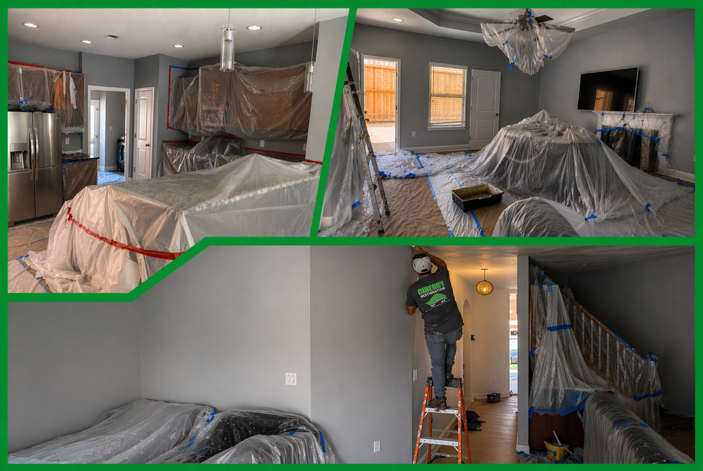

One of the biggest advantages of working with Cinergy Restoration is being able to move from mitigation into construction without handing the project off to a completely separate contractor. That creates a smoother experience, stronger continuity, and fewer communication gaps for the client.
From structural repairs to finish work, our construction and renovation services are designed to bring the property back together efficiently while maintaining the same service-first approach from start to finish.
